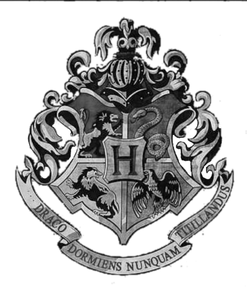

DAILY PROPHET
TODAY:
National Weather
South - cloudy 18 C°
North - storm 13 C°
Central - rainy 15 C°
London - cloudy 16 C°

SPORT
Студенты Хогвартса создали новую игру - "Квиддич на лыжах", которая сочетает в себе
элементы Квиддича и лыжного спорта. Игра уже стала популярной среди студентов, и скоро
будет проведен первый официальный турнир.
 Студенты Хогвартса создали новую группу, которая будет исполнять волшебную музыку.
Группа под названием "Mystery Melody" уже начала репетировать и скоро будет выступать
на различных мероприятиях в Хогвартсе.
Студенты Хогвартса создали новую группу, которая будет исполнять волшебную музыку.
Группа под названием "Mystery Melody" уже начала репетировать и скоро будет выступать
на различных мероприятиях в Хогвартсе.
 Новый магазин "Всякие волшебные вредилки", популярный магазин шуток и развлечений,
основанный Фредом и Джорджем Уизли, открывается в Хогсмиде!
Он будет предлагать все последние шутки и развлечения, а также несколько новых и
инновационных продуктов. Студенты с нетерпением ждут, что Уизли и
Уизли приготовили для них.
CHARM
Хранитель Хагрид объявил, что его класс по уходу за магическими существами будет
включать новые и экзотические создания в этом семестре. Студенты будут иметь возможность
узнать о них и взаимодействовать с ними. Среди животных присутствуют Крутокрылы,
Когтешвалы и даже несколько видов из Запретного леса.
Новый магазин "Всякие волшебные вредилки", популярный магазин шуток и развлечений,
основанный Фредом и Джорджем Уизли, открывается в Хогсмиде!
Он будет предлагать все последние шутки и развлечения, а также несколько новых и
инновационных продуктов. Студенты с нетерпением ждут, что Уизли и
Уизли приготовили для них.
CHARM
Хранитель Хагрид объявил, что его класс по уходу за магическими существами будет
включать новые и экзотические создания в этом семестре. Студенты будут иметь возможность
узнать о них и взаимодействовать с ними. Среди животных присутствуют Крутокрылы,
Когтешвалы и даже несколько видов из Запретного леса.